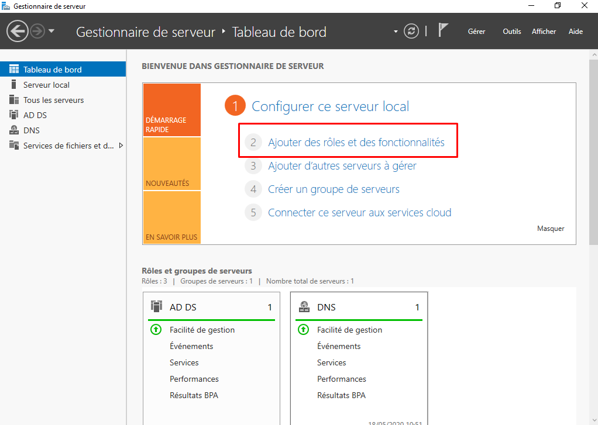

Installation de Windows Server sur VMware pour Active Directory
Voir plusRéseau - VMware
Installation de Windows Server sur VMware pour Active Directory
Prérequis
Avant de commencer l'installation de Windows Server sur VMware, assurez-vous d'avoir les éléments suivants :
- VMware Workstation ou VMware Player installé sur votre machine.
- L'image ISO de Windows Server téléchargée depuis le site de Microsoft.
- Une configuration VMware prête à accueillir la machine virtuelle Windows Server.
Étapes d'installation
Création de la machine virtuelle
1 Lancez VMware Workstation ou VMware Player.
2 Créez une nouvelle machine virtuelle en sélectionnant "Nouvelle machine virtuelle" ou "Créer une nouvelle machine virtuelle".
3 Choisissez "Installer le système d'exploitation plus tard".
4 Sélectionnez "Microsoft Windows" comme type d'OS et choisissez la version appropriée pour votre version de Windows Server.
5 Suivez les étapes pour la configuration matérielle de la machine virtuelle (mémoire, disque dur, processeur, etc.).
6 Choisissez "Utiliser un disque dur existant" ou "Créer un nouveau disque dur" selon vos besoins.
Installation de Windows Server
1 Montez l'image ISO de Windows Server dans la machine virtuelle.
2 Démarrez la machine virtuelle et suivez les instructions pour l'installation de Windows Server.
3 Sélectionnez la langue, l'heure et le clavier appropriés.
4 Choisissez "Installer maintenant" et suivez les étapes pour l'installation de Windows Server.
5 Lorsqu'on vous demande, sélectionnez "Custom: Install Windows only (advanced)" pour une installation personnalisée.
6 Choisissez le disque dur virtuel sur lequel vous souhaitez installer Windows Server et suivez les instructions pour terminer l'installation.
Configuration initiale de Windows Server
Après l'installation, redémarrez la machine virtuelle.
Connectez-vous en utilisant les informations d'identification que vous avez définies lors de l'installation.
Configurez les paramètres initiaux de Windows Server tels que le nom de l'ordinateur, le réseau, etc.
Installation du rôle Active Directory
1 Ouvrez le Gestionnaire de serveur en cliquant sur le bouton "Gérer" dans le coin inférieur gauche de l'écran.
2 Cliquez sur "Ajouter des rôles et des fonctionnalités".
3 Sélectionnez "Active Directory Domain Services" dans la liste des rôles disponibles et suivez les étapes pour l'installer.
4 Une fois l'installation terminée, vous serez invité à configurer Active Directory en tant que nouveau contrôleur de domaine.

Configuration d'Active Directory
Suivez l'assistant de configuration d'Active Directory pour spécifier les détails du domaine, tels que le nom de domaine, le niveau fonctionnel, etc.
Une fois la configuration terminée, redémarrez le serveur pour finaliser la configuration d'Active Directory.
Conclusion
Félicitations ! Vous avez maintenant installé avec succès Windows Server sur VMware et configuré Active Directory dans votre environnement virtuel.
Vous pouvez maintenant commencer à gérer vos utilisateurs, groupes et ressources réseau à l'aide d'Active Directory.